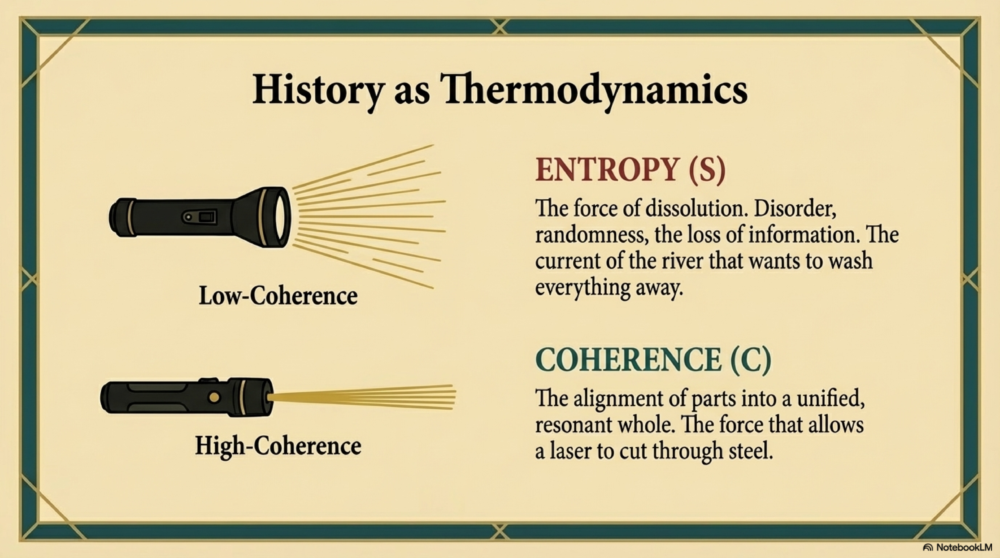
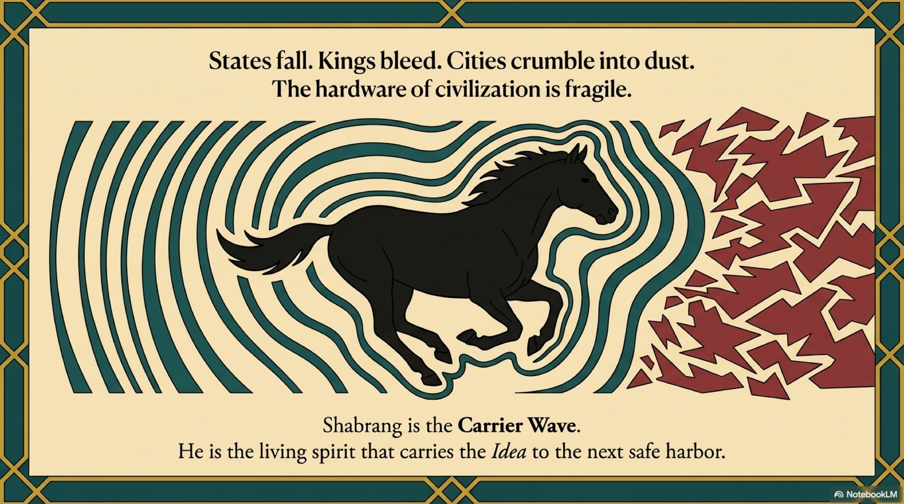
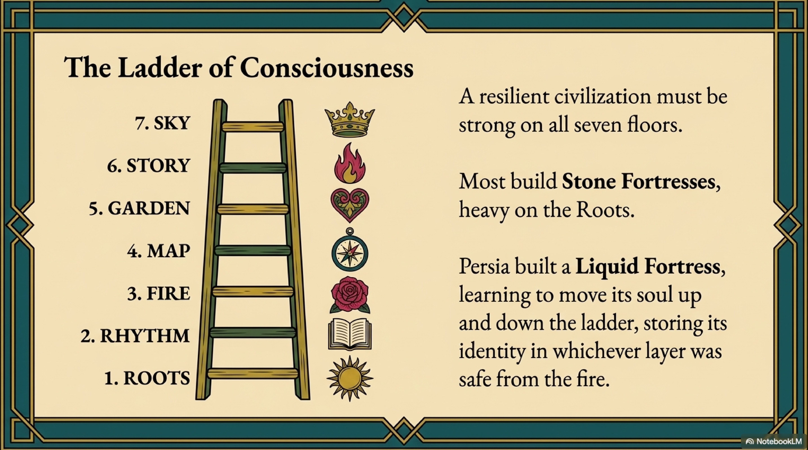
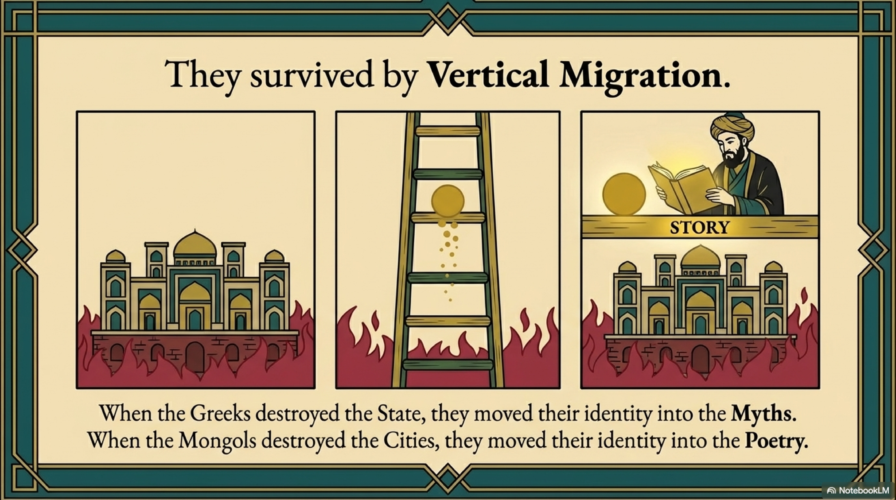

By the early 13th century, the Persian Mind had achieved something rare in the history of ideas. It had developed two fully mature, parallel operating systems.
First was The Peripatetic System, or Falsafa. Built on Aristotle and Avicenna, it relied on Reason, deduction, and syllogism. It mapped the universe as a logical machine. It was the perfection of The Map, Level 4.
Second was The Illuminative System, or Ishraq and Tasawwuf. Built on Suhrawardi and the Sufis, it relied on Intuition, vision, and "tasting." It mapped the universe as a living light. It was the exploration of The Story and The Sky, Levels 6 and 7.
In most civilizations, these two systems are enemies. We see this in the modern West as the war between Science and Religion. We saw it in medieval Europe as the conflict between Scholasticism and Mysticism.
But in Iran, a different reaction occurred. Instead of conflict, there was Fusion.
The scholars began to ask: What if Reason is the ladder, and Vision is the view from the roof?
They created a new synthesis called Irfan, or Gnosis.

The core breakthrough of Irfan was a redefinition of what it means to "know."
Classical Greek logic, and modern science, relies on Knowledge by Representation. I see a fire. My brain creates a concept of "fire." I analyze the concept. There is a separation between the Knower (Subject) and the Known (Object). This is Dualistic Coherence. It is safe, but it is distant.
The Persian Gnostics proposed a higher form: Knowledge by Presence (Ilm al-Huduri). I do not just look at the fire. I become the fire. I know heat not by measuring it with a thermometer, but by being hot. There is no separation. The Subject and Object phase-lock into a single state. This is Unitary Coherence.
In our framework, this is the discovery that the Observer can merge with the Observed to create a Unified Event.
This was not a rejection of logic. The Gnostics were often master logicians. They simply argued that logic was a tool for verifying truth, not for finding it.
The intellect checks the map. The heart walks the path.

This era popularized the metaphor of the Two Wings (Do Bal).
A bird cannot fly with the wing of Reason alone; it spins in circles of dry skepticism. It cannot fly with the wing of Revelation alone; it spins in circles of fanaticism. To reach the Simurgh—the ultimate Truth—the soul needs both.
This became the standard pedagogy of the Persian madrasas. A student would study logic, mathematics, and astronomy in the morning (The Map), and poetry, meditation, and ethics in the evening (The Fire and The Garden).
They were building Full-Stack Humans.
They were training minds that could calculate the curvature of the earth like Al-Biruni and write ecstatic poetry about the annihilation of the self like Attar. They were creating a civilization of Scholar-Saints.

Why does this matter historically? Why is this relevant to survival?
Because this synthesis created a Psychological Armor of immense density.
If your worldview depends entirely on external validation—on the stability of the state, the prosperity of the economy, or the books in the library—then physical destruction destroys your mind. If the library burns, the truth is lost.
But the Gnostic worldview is Internal.
If Truth is found through Presence—through the direct connection of the soul to the Source—then it is independent of material conditions. You can access the Divine Light in a palace, and you can access it in a dungeon. You can find Asha in the middle of a golden age, and you can find it in the middle of an apocalypse.
The synthesis of Irfan moved the center of gravity of the Persian civilization from the City to the Soul.
They had uploaded their civilization to a decentralized, non-local network. They had built a mental fortress that required no walls, because its foundations were laid in the unassailable realm of direct experience.
And just in time.
Because the dust was rising on the eastern horizon. The banners of the Golden Horde were approaching. The physical world of Iran—the libraries, the observatories, the canals, the palaces—was about to be erased from the face of the earth.
The intellectual fortress was complete. But the physical world was about to end. The horse, Shabrang, braced for the impact of the Mongols.
The Great Nigredo had arrived.